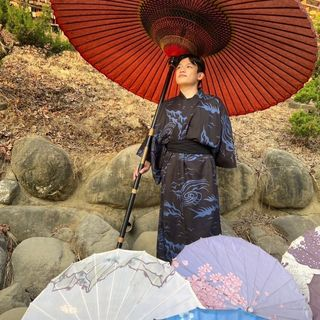

個人履歷

姓名： 李亮宏
性別： 男
居住地： 屏東
學歷： 國立高雄大學資訊管理學系
自我介紹：
我是
李亮宏
，來自
屏東
。
現在在
高雄大學資訊管理學系
就讀大四。我對學習和探索很有興趣，特別是在我的專業裡。
除了讀書，我也喜歡參加各種活動，跟人聊天，分享想法。
我覺得
人際關係和
溝通能力
很重要，所以我一直在努力學習團隊合作和溝通技巧。
未來，我想把我學到的知識應用到工作上，不斷進步，成為一個
有價值的專業人士
。
以上部分純屬虛構
專長:
資訊
數學
興趣:
打球
聽音樂
喜歡科目:
數學
資訊
物理
化學
喜歡食物:
炒飯
咖哩飯
肉燥飯
炒麵
喜歡飲料:
紅茶
奶茶
綠茶
青茶
喜歡運動:
桌球
羽球
籃球
排球
聯絡方式
臉書:
李亮宏
信箱:
a1093376@mail.nuk.edu.tw
LINE:
Liang~
回最上面